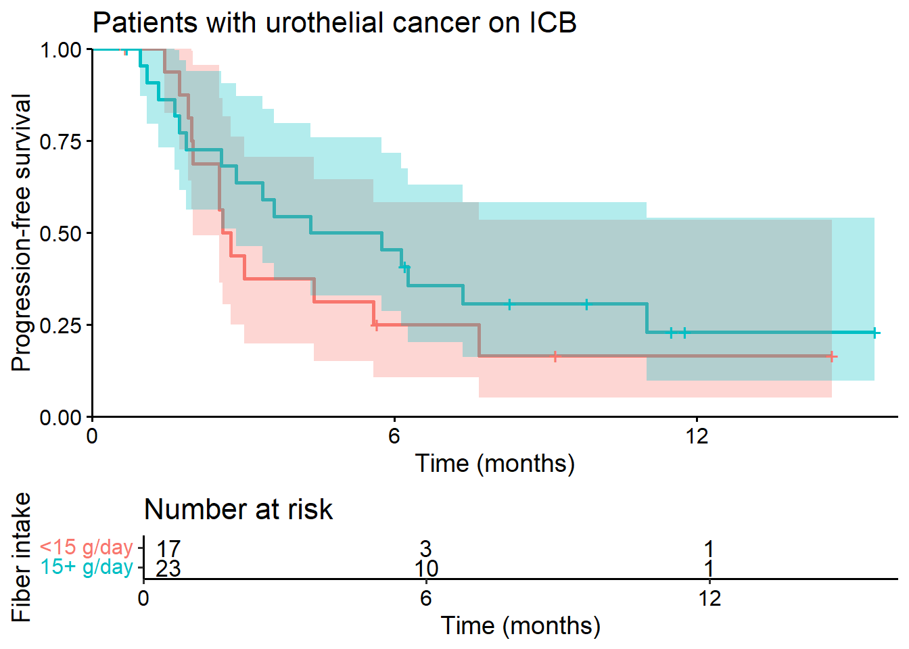

Extended Figure 2: PFS vs Fiber by Disease Type
Extended Figure 2: PFS vs Fiber by Disease Typecox_pfs_allMet_mv <-coxph(Surv(pfs_mo,
pod_status)~ fiber_dichotomized +
ageby10 +
ecog_1to5_final +
cancer_RCCvsUC_NAME,
all_metadata_fiber)
summary(cox_pfs_allMet_mv)Call:
coxph(formula = Surv(pfs_mo, pod_status) ~ fiber_dichotomized +
ageby10 + ecog_1to5_final + cancer_RCCvsUC_NAME, data = all_metadata_fiber)
n= 88, number of events= 57
coef exp(coef) se(coef) z Pr(>|z|)
fiber_dichotomized -0.8237 0.4388 0.2917 -2.824 0.00475 **
ageby10 0.3010 1.3511 0.1422 2.117 0.03426 *
ecog_1to5_final 0.3214 1.3790 0.3315 0.970 0.33227
cancer_RCCvsUC_NAMEUC 0.4412 1.5545 0.2914 1.514 0.13006
---
Signif. codes: 0 '***' 0.001 '**' 0.01 '*' 0.05 '.' 0.1 ' ' 1
exp(coef) exp(-coef) lower .95 upper .95
fiber_dichotomized 0.4388 2.2790 0.2477 0.7772
ageby10 1.3511 0.7401 1.0226 1.7853
ecog_1to5_final 1.3790 0.7251 0.7202 2.6407
cancer_RCCvsUC_NAMEUC 1.5545 0.6433 0.8781 2.7520
Concordance= 0.676 (se = 0.036 )
Likelihood ratio test= 20.55 on 4 df, p=4e-04
Wald test = 20.05 on 4 df, p=5e-04
Score (logrank) test = 21.25 on 4 df, p=3e-04cox_pfs_allMet_mv2 <-coxph(Surv(pfs_mo,
pod_status)~ fiber_dichotomized +
calor +
ageby10 +
ecog_1to5_final +
cancer_RCCvsUC_NAME,
all_metadata_fiber)
summary(cox_pfs_allMet_mv2)Call:
coxph(formula = Surv(pfs_mo, pod_status) ~ fiber_dichotomized +
calor + ageby10 + ecog_1to5_final + cancer_RCCvsUC_NAME,
data = all_metadata_fiber)
n= 88, number of events= 57
coef exp(coef) se(coef) z Pr(>|z|)
fiber_dichotomized -0.7247475 0.4844469 0.3636819 -1.993 0.0463 *
calor -0.0001182 0.9998818 0.0002659 -0.445 0.6566
ageby10 0.2964480 1.3450727 0.1416315 2.093 0.0363 *
ecog_1to5_final 0.3283082 1.3886169 0.3321438 0.988 0.3229
cancer_RCCvsUC_NAMEUC 0.4488039 1.5664374 0.2920805 1.537 0.1244
---
Signif. codes: 0 '***' 0.001 '**' 0.01 '*' 0.05 '.' 0.1 ' ' 1
exp(coef) exp(-coef) lower .95 upper .95
fiber_dichotomized 0.4844 2.0642 0.2375 0.9881
calor 0.9999 1.0001 0.9994 1.0004
ageby10 1.3451 0.7435 1.0190 1.7754
ecog_1to5_final 1.3886 0.7201 0.7242 2.6626
cancer_RCCvsUC_NAMEUC 1.5664 0.6384 0.8837 2.7767
Concordance= 0.675 (se = 0.036 )
Likelihood ratio test= 20.75 on 5 df, p=9e-04
Wald test = 20.38 on 5 df, p=0.001
Score (logrank) test = 21.54 on 5 df, p=6e-04cox_pfs_allMet_mv3 <-coxph(Surv(pfs_mo,
pod_status)~ fiber_dichotomized +
Impact.TMB.Imputed +
ageby10 +
ecog_1to5_final +
cancer_RCCvsUC_NAME,
all_metadata_fiber)
summary(cox_pfs_allMet_mv3)Call:
coxph(formula = Surv(pfs_mo, pod_status) ~ fiber_dichotomized +
Impact.TMB.Imputed + ageby10 + ecog_1to5_final + cancer_RCCvsUC_NAME,
data = all_metadata_fiber)
n= 88, number of events= 57
coef exp(coef) se(coef) z Pr(>|z|)
fiber_dichotomized -0.82256 0.43931 0.28929 -2.843 0.00446 **
Impact.TMB.Imputed -0.08070 0.92247 0.06581 -1.226 0.22012
ageby10 0.27994 1.32305 0.14220 1.969 0.04900 *
ecog_1to5_final 0.18632 1.20481 0.34864 0.534 0.59305
cancer_RCCvsUC_NAMEUC 0.73653 2.08868 0.37273 1.976 0.04815 *
---
Signif. codes: 0 '***' 0.001 '**' 0.01 '*' 0.05 '.' 0.1 ' ' 1
exp(coef) exp(-coef) lower .95 upper .95
fiber_dichotomized 0.4393 2.2763 0.2492 0.7745
Impact.TMB.Imputed 0.9225 1.0840 0.8108 1.0495
ageby10 1.3231 0.7558 1.0012 1.7483
ecog_1to5_final 1.2048 0.8300 0.6084 2.3860
cancer_RCCvsUC_NAMEUC 2.0887 0.4788 1.0060 4.3365
Concordance= 0.677 (se = 0.035 )
Likelihood ratio test= 22.13 on 5 df, p=5e-04
Wald test = 22.25 on 5 df, p=5e-04
Score (logrank) test = 23.39 on 5 df, p=3e-04#Extended Data Figure 2
kmPFS<-survfit(Surv(pfs_mo, pod_status)~fiber_dichotomized,
type="kaplan-meier", data=mUCdataFiber)
ggsurvplot(kmPFS,risk.table=TRUE,
xlab="Time (months)",
ylab="Progression-free survival",
#pval = TRUE,
legend="none",
title="Patients with urothelial cancer on ICB",
legend.title="Fiber intake",
legend.labs=c("<15 g/day","15+ g/day"),
#surv.median.line = "hv",
conf.int=TRUE,
break.x.by=6,
axes.offset=FALSE,
xlim=c(0,16),
data = mUCdataFiber)